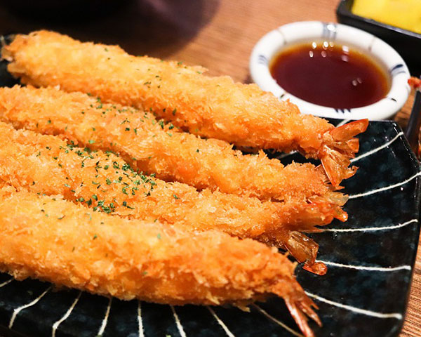
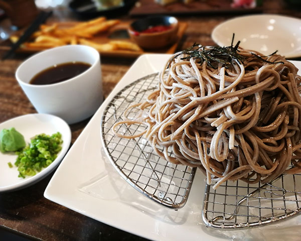
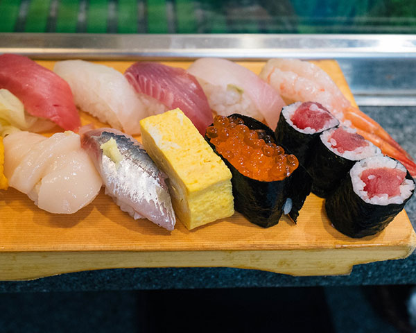

Tempura (天ぷら or 天麩羅) is a Japanese dish usually consisting of seafood or vegetables that have been battered and deep fried. The dish was influenced by fritter-cooking techniques introduced by the Portuguese residing in Nagasaki in the 16th century. The name "tempura" originates from the Latin phrase quatuor anni tempora, which refers to the Ember Days, during which no meat is consumed.
Tempura

Soba

Soba (そば or 蕎麦) is the Japanese name for buckwheat. It usually refers to thin noodles made from buckwheat flour, or a combination of buckwheat and wheat flours (Nagano soba). They contrast to thick wheat noodles, called udon. Soba noodles are served either chilled with a dipping sauce, or in hot broth as a noodle soup.
Sushi

Sushi (すし, 寿司) is a Japanese dish of prepared vinegared rice (鮨飯, sushi-meshi), usually with some sugar and salt, accompanying a variety of ingredients (ネタ, neta), such as seafood, vegetables, and occasionally tropical fruits. Styles of sushi and its presentation vary widely, but the one key ingredient is "sushi rice", also referred to as shari (しゃり), or sumeshi (酢飯).